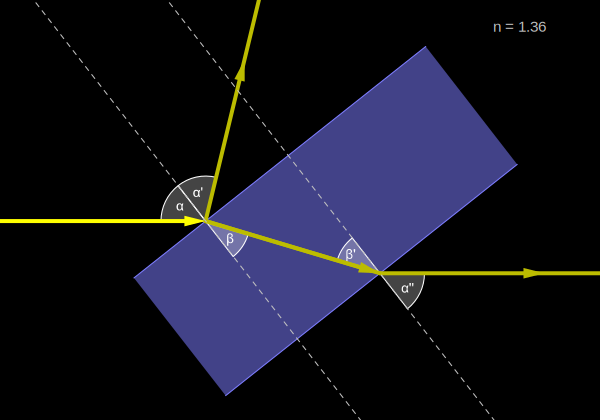
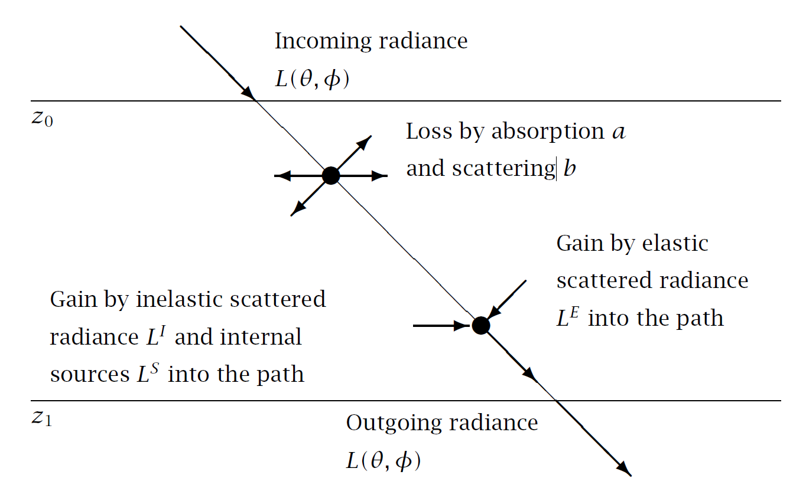

Radiation and Optics
Heavily edited sections from BTV1 1. Introduction
Abstract
This chapter discusses radiation-physics and optics from the point of view of biological systems and their scientific and practical study.
Wavelength and Colour
Radiation can be described as waves, with wavelength or frequency as properties, or based on quantum physics, as photons of specific energy. This “double personality” of light is important as each viewpoint provides a simpler explanation for different specific phenomena, such as refraction and reflection at boundaries between materials and absorption of radiation by pigments and other molecules. From the first perspective, ultraviolet (UV), visible (VIS), and infrared (IR) radiation are electromagnetic waves and are described by the Maxwell’s equations.1 From the second perspective, Plank’s law describes the energy of a quantum as inversely proportional to wavelength.
The wavelength ranges of visible radiation, described by their colour based on human vision’s response to monochromatic light, are shown in Figure 1, topmost bar of wavebands. The colour ranges indicated in Figure 1 are one approximation out of several available. We follow the ISO and CIE standards when applicable. The electromagnetic spectrum is continuous with no clear boundaries between one colour and the next. Colours are the result of the interaction of different wavelengths of radiation with the photoreceptor pigments in the eye and the processing of the stimuli by the brain. Alternative definitions based on other sensory systems or energy capture systems are available, some of them applicable to plants are shown in Figure 1, two lowermost bars of wavebands.
Different regions or wavebands of UV and IR radiation are also shown in Figure 1, but only in the proximity of visible radiation. In Figure 2 they are shown for a wider range of wavelengths. It is important to keep in mind that the ISO and CIE definitions of the VIS and UV wavebands overlap. Thus, it is incorrect to sum VIS and UV irradiances, while the definitions of photosynthetically active radiation (PAR) and UV do not overlap. Especially in the IR region, the subdivision is somewhat arbitrary and the boundaries used in the literature vary, with differences even between ISO and CIE standards.

The energy of a quantum of radiation in a vacuum, depends on the wavelength, \(\lambda\), or frequency2, \(\nu\),
\[q = h \cdot \nu = h \cdot \frac{c}{\lambda}\]
with the Planck constant \(h=6.626\times 10^{-34}\,\mathrm{J\,s}\) and speed of light in vacuum \(c=2.998\times 10^{8}\,\mathrm{m}\,\mathrm{s}^{-1}\). When dealing with numbers of photons, the equation above can be extended by using Avogadro’s number \(N_\mathrm{A}=6.022\times 10^{23}\) mol\(^{-1}\). Thus, the energy of one mole of photons, \(q^\prime\), is
\[q^\prime = h^\prime \cdot \nu = h^\prime \cdot \frac{c}{\lambda}\] with \(h'=h\cdot N_\mathrm{A}=3.990\times 10^{-10}\,\mathrm{J\,s\,mol}^{-1}\).
The two equations above, are valid for all kinds of electromagnetic waves.
examples
Example 1: red light at 600 nm has about 200 kJ mol\(^{-1}\), therefore, 1 \(\mu\)mol photons has 0.2 J. Example 2: radiation at 300 nm has about 400 kJ mol\(^{-1}\), therefore, 1 \(\mu\)mol photons has 0.4 J.
Angle of Incidence
Most frequently we describe the flux of radiation on a plane, usually, but not always a horizontal plane Figure 3. This flux is called irradiance and expressed per unit area and unit time. The area used as a reference is that of the receiving plane. Fluence rate is measured on the surface of a sphere instead of a plane. In this case, the plane is located in three-dimensional (3D) space. When considering a point source of radiation, the angle, \(\alpha\), between the light beam and the receiving plane or surface affects the received irradiance: the shallower the angle of incidence the lower the irradiance from the same beam of light. Both irradiance and fluence rate are fluxes of radiation, expressed per unit area and unit time Figure 3. In the first case the area is that of the illuminated planar surface and in the second case of an spherical surface.

Sensors and their shape
There are, in principle, two possible approaches to measuring radiation. The first is to observe light from one specific direction or viewing angle, which is the radiance \(L\). The second is to use a detector, which senses radiation from more than one direction and measures radiation impinging it from all directions from an enclosing sphere or hemisphere. The relation between irradiance \(E\) and radiance \(L\) at wavelength \(\lambda\) is given by integrating incoming photons over these directions.
\[\begin{aligned} E[0](\lambda) & = \int_\Omega L(\lambda,\Omega) {\rm d}\Omega \label{equ_E0} \\ E(\lambda) & = \int_\Omega I(\lambda,\Omega) |\cos\alpha| {\rm d}\Omega \label{equ_E} %\end{eqnarray} \end{aligned}\]
The shape of a detector entrance-optics, planar or spherical, determines the measured physical quantity, and the weight given to photons from different directions Figure 3. Collection of light on a flat surface (or equivalently through an small opening in an integrating sphere) yields irradiance, energy irradiance, \(E\), or photon irradiance, \(Q\) depending on the spectral response of the detector. A spherical collecting surface, yields fluence rate (also called scalar irradiance) \(E_0\), \(Q_0\). In practice, all spherical sensors have a blind stop due to necesary support and connection to a readout device.
The sun, can be assumed to be a point source (the solar disk is \(\approx 1 ^\circ\) in diameter when seen from Earth). Changes in distance that are of interest when studying plants are extremely small relative to the total Sun to Earth distance and can be ignored. Thus, in the case of direct sunlight, we have to consider only the angle of incidence. For a given light source the maximum irradiance is that received on a plane normal to the light beam Figure 3. As the angle between the beam and the surface becomes shallower, the irradiance measured on the plane decreases, reaching zero, when the beam is parallel to the surface. The relationship between the normal area and that at a shallower angle is given by the cosine of the angle \(\alpha\). When considering the sun, if the receiving plane is horizontal, the angle of interest is the zenith angle (1 - solar elevation angle) Figure 4. If the plane is not horizontal, the angle between the plane and the light beam depends both the the zenith angle and the azimuth angle of the sun’s position, and the effective angle needs to be computed in three dimensions.

Obviously, the discussion above ignored scattered radiation from the sky. One approach to the simulation of the light field when multiple sources or sources with a large emitting area are present, is to use ray tracing, which is essentially a divide and conquer approach.
When we considered a point source like a bare LED chip or light from a small light bulb at a relatively short distance from the receiving plane, distance cannot be ignored as done above for the sun, as the illuminated area increases four times for each doubling in the distance. Thus, each doubling in distance decreases irradiance by 75%.
In the case of light sources with a large surface relative to the illuminated area or light beams focused by a lens or reflector, the rate of increase in area is smaller than for a point source. The extreme case is a highly collimated laser beam, for which the illuminated area increases very slowly with increasing distance. The irradiance, in these cases, is frequently not uniform within the illuminated area, with in most cases higher iradiance at the centre than at the edges of the illuminated area.
Tip
Using a lens or reflector to make a light beam narrower makes it possible to increase irradiance by concentrating the light energy onto a smaller illuminated area, and this effect can be quantitatively large. Alternatively, the narrower beam makes it possible to move the light source away from the illuminated object maintaining the same irradiance. This can provide additional space for other equipment, or when using selective reflectors that transmit infrared radiation and only reflect VIS and/or UV radiation reduce the heat load on the illuminated object.
In a perfectly collimated beam, the photons follow parallel trajectories. In a beam from a ideal point source the trajectories of the photons are equally probable in all directions (away from the centre of an imaginary sphere). Most real light sources behave somewhere in between these extremes.
Angle of Incidence in 3D
While in Figure 4, we had the sensor or observer at the centre, and the light source located on an imaginary sphere, here, instead, we locate the point light source at the centre of the sphere. So, when a beam or the radiation passing into a space or sphere is analysed, two important parameters are necessary: the distance to the source and the position of the measurement plane—i.e., if the receiving surface is perpendicular to the beam or at a shallower angle. The geometry is illustrated in Figure 5. The radiation is received at distance \(r\) by a surface of area d\(A\), tilted by an angle \(\alpha\) to the unit sphere’s surface element, a solid angle, d\(\Omega\), which is a two-dimensional angle in a space. The relation between d\(A\) and d\(\Omega\) in spherical coordinates is geometrically explained in Figure 5.

The solid angle is calculated from the zenith angle \(\theta\) and azimuth angle \(\phi\), which denote the direction of the radiation beam
\[{\rm d}\Omega = {\rm d}\theta\cdot\sin\theta{\rm d}\phi \label{equ_dsolidangle}\] The area of the receiving surface is calculated by a combination of the solid angle of the beam, the distance \(r\) from the radiation source and the angle \(\alpha\) of the tilt:
\[{\rm d}A = \frac{r{\rm d}\theta}{\cos\alpha}\cdot r\sin\theta{\rm d}\phi\] which can be rearranged to
\[\Rightarrow {\rm d}A = \frac{r^2}{\cos\alpha}\quad{\rm d}\Omega\] Thus, the solid angle is given by
\[\Omega = \int_A \frac{{\rm d}A\cdot\cos\alpha}{r^2} \label{equ_solidangle}\] The unit of the solid angle is a steradian (sr). The solid angle of an entire sphere is calculated by integration of the equation above over the zenith (\(\theta\)) and azimuth (\(\phi\)) angles, \(0\le\theta\le\pi(180^\circ)\) and \(0\le\phi\le2\pi(360^\circ)\), and is \(4\pi\) sr.
Radiation Quantities
The amount of radiation can be quantified in different ways. Each quantity is useful in different circumstances. We have already used some of these quantities above, here we Quantities can describe flows (energy per unit time), flux rates (energy per unit time and unit area), exposure (energy per event and unit area), radiant flux (energy per unit time) and radiance (energy per unit area and solid angle). The shape of the receiving surface can be a plane, a sphere, a hemisphere or even a cylinder. In the case of radiance, the angle of acceptance of the sensor can also vary but is usually narrow (\(\leq 10^\circ\)). These definitions are independent of wavelengths, but the quantities are in most cases used to describe energy integrated over a certain range of wavelengths based on the “named” wavebands shown in Figure 1 and Figure 2. The definitions and symbols of several physical quantities used to describe the “amount of radiation” are given in (tab-energy-quantites?).
| Symbol | Unit | Description |
|---|---|---|
| \(\Phi=\frac{\partial e}{\partial t}\) | W = J s\(^{-1}\) | Radiant flux: absorbed or emitted energy per time interval |
| \(H=\frac{\partial e}{\partial A}\) | J m\(^{-2}\) | Exposure: energy towards a surface area. (In plant research this is called usually dose (), while in Physics dose refers to absorbed radiation.) |
| \(E=\frac{\partial \Phi}{\partial A}\) | W m\(^{-2}\) | Irradiance: flux or radiation towards a surface area, radiant flux density |
| \(I=\frac{\partial \Phi}{\partial\Omega}\) | W sr\(^{-1}\) | Radiant intensity: emitted radiant flux of a surface area per solid angle |
| \(\epsilon=\frac{\partial \Phi}{\partial A}\) | W m\(^{-2}\) | Emittance: emitted radiant flux per surface area |
| \(L=\frac{\partial^2 \Phi}{\partial \Omega (\partial A\cdot \cos\alpha)}=\frac{\partial I}{\partial A\cdot\cos\alpha}\) | W m\(^{-2}\) sr\(^{-1}\) | Radiance: emitted radiant flux per solid angle and surface area depending on the angle between radiant flux and surface perpendicular |
Taking into account Figure 5, the corresponding equations and assuming a homogenous flux, the relation between irradiance \(E\) and intensity \(I\) is given by \[E = \frac{I \times \cos\alpha}{r^2} \label{equ_r2law}\]. The irradiance decreases by the square of the distance to the source and depends on the tilt of the detecting surface area, \(\alpha\). This is valid only for theretical point sources, and a good approximation for small ones. For outdoor measurements the sun can be assumed to be a point source. For artificial light sources simple LEDs (light-emitting diodes) without optics on top are also effectively point sources. However, LEDs with optics—and other artificial light sources with optics or reflectors designed to give a narrower light beam—deviate to various extents from the rule of a decrease of irradiance proportional to the square of the distance from the light source.
When we are interested in photochemical reactions, the most relevant radiation quantities are those expressed in photons. The reason for this is that, as discussed in section 1.2 on page , molecules are excited by the absorption of certain fixed amounts of energy or quanta. The surplus energy “decays” by non-photochemical processes. When studying photosynthesis, where many photons of different wavelengths are simultaneously important, we normally use photon irradiance to describe amount of . The name photosynthetic photon flux density, or , is also frequently used when referring to photon irradiance. When dealing with energy balance of an object instead of photochemistry, we use (energy) irradiance. In meteorology both and visible radiation, are quantified using energy-based quantities. When dealing with photochemistry as in responses mediated by UVR8, an photoreceptor, the use of quantum quantities is preferred. According to the physical energetic quantities in the table [tab:Phys:Quants], the equivalent photon related quantities are listed in the table below and have the subscript \(\mathrm{p}\).
Table. Photon quantities of light.
| Symbol | Unit | Description |
|---|---|---|
| \(\Phi_\mathrm{p}\) | s\(^{-1}\) | Photon flux: number of photons per time interval |
| \(Q=\frac{\partial \Phi_\mathrm{p}}{\partial A}\) | m\(^{-2}\) s\(^{-1}\) | Photon irradiance: photon flux towards a surface area, photon flux density (earlier frequently called photon flux density and abbreviated as PFD) |
| \(H_p=\int_t\;Q\;\mathrm{d}t\) | m\(^{-2}\) | Photon exposure: number of photons towards a surface area during a time interval, photon fluence |
These quantities can be also used based on a ‘chemical’ amount of moles by dividing the quantities by Avogadro’s number \(N_A=6.022\times 10^{23}\) mol\(^{-1}\). To determine a quantity in terms of photons, an energetic quantity has to be weighted by the number of photons, i.e., divided by the energy of a single photon at each wavelength as defined in equation [equ_energy]. This yields for example \[\Phi_\mathrm{p} = \frac{\lambda}{h\;c}\cdot\frac{\partial q}{\partial t}\hspace{1cm}\mathrm{and}\hspace{1cm}Q(\lambda) = \frac{\lambda}{h\;c}\cdot E(\lambda)\] When dealing with bands of wavelengths, for example an integrated value like from 400 to 700 nm, it is necessary to repeat these calculations at each wavelength and then integrate over the wavelengths. For example, the photon irradiance or in moles of photons is obtained by \[Q_\mathrm{PAR} = \frac{1}{N_\mathrm{A}}\int_{400\;\mathrm{nm}}^{700\,\mathrm{nm}}\frac{\lambda}{hc}\;E(\lambda)\;\mathrm{d}\lambda\] For integrated values of or radiation the calculation is done analogously by integrating from 280 to 315 nm or 315 to 400 nm, respectively.
If we have measured (energy) irradiance, and want to convert this value to photon irradiance, the exact conversion will be possible only if we have information about the spectral composition of the measured radiation. Conversion factors at different wavelengths are given in the table below. For , 1 of “average daylight” is approximately 4.6. This is exact only if the radiation is equal from 400 to 700 nm, because the factor is the value at the central wavelength at 550 nm. Further details are discussed in section [sec:basic:concepts] on page .
Table. Conversion factors of photon and energy quantities at different wavelengths.
| to | \(\lambda\) (nm) | |
|---|---|---|
| 2.34 | 280 | |
| 2.49 | 298 | |
| 2.63 | 315 | |
| 2.99 | 358 | |
| 3.34 | 400 | |
| 4.60 | 550 | |
| 5.85 | 700 |
Effective quantities
Besides the physical quantities used for all electromagnetic radiation, there are also equivalent spectrally weighted quantities used to assess the effect of radiation on a sensory system, photochemical reactions and biological responses. The most widely used are photometric quantities, describing the apparent brightness of light to the human eye. Although quantitatively irrelevant to systems other that human vision, they are commonly used by lamp manufacturers to describe light output of artificial light sources.
Add short description of photometric quantities and units. (Text box in BTV1)
Photosynthetically active radiation, CIE’s erythemal exposures, and many other “effective” quantities are in common use. These are described in Chapter XXXXX.
Interactions of Light with Matter
Reflection
Collimated light reflected from a mirror surface remains collimated, while its direction changes. Light reflected from a white surface is scattered, and if previously collimated, after being reflected it becomes more diffuse, i.e., it leaves the surface in multiple directions. A black surface does not reflect the incident light. A clear or transparent object transmits all the light incident on its surface, similarly to reflection from mirrors and white surfaces, a clear object can scatter the light passing through it or not. Real objects share some of the properties of these theoretical objects. The atmosphere is not perfectly clear and does partly scatter and partly absorb radiation, depending on the wavelength of the incoming or outgoing radiation. The same applies to water. In both cases, interactions take place as the light travels through them, as well as at the interface between media with different refractive index.
At the boundary between two materials with different refractive index, the direction of the light beam changes, and depending on the difference in refractive index and the angle of incidence, a varying fraction of the incident light is reflected at the interface (Figure 6). On a flat surface like a glass plate or polished metal surface the applicable equation is that derived from Snell’s law, which mathematically is given by
\[n_1 \times sin(\theta_1) = n_2 \times sin(\theta_2)\]
where \(n_1\) and \(n_2\) are the refractive indexes of two materials, such as air and glass, and \(\theta_1\) and \(\theta_2\) and the refraction angles.
Reflectance can be estimated from the difference in refractive index and the angle of incidende of the light onto the plane of the interface. Reflectance depends on the contribution of \(s\) and \(p\) polarised components.
\[R_p = \left(\frac{n^2 \times \cos(\theta) - \sqrt{n^2 - \sin(\theta)^2}} {n^2 \times \cos(\theta) + \sqrt{n^2 - \sin(\theta)^2}}\right)^2\]
and
\[R_s = \left(\frac{\cos(\theta) - \sqrt{n^2 - \sin(\theta)^2}} {\cos(\theta) + \sqrt{n^2 - \sin(\theta)^2}}\right)^2\]
Combining both formulas above, weighted based on the contributions of \(p\) and \(s\) components. The reflectance of a single interface can be calculated as
\[R = R_p \times f_p + R_s \times f_s\]
with \(f_p + f_s = 1\), for the fraction of the radiation with \(p\) and \(s\) polarization planes. Using these equations, the reflectance at a glass window in contact with air of both sides can be computed. The refractive index of air is 1 and that of glass 1.5, so reflectance for a relative refractive index of \(n = 1.5\) is shown in Figure 6 simulates a single and a double interface.
The reflectance for two surfaces can be computed taking into account multiple back and forth reflections within the glass pane as well as its internal absorbance, or approximated ignoring them, as in Figure 6. For a clear glass pane the error is not too large, but for some other materials could cause significant bias in the estimates.

Practical examples
The fraction of the incident light reflected by the glass or plastic roof of a greenhouse depends on the angle of incidence of the light, making the orientation and inclination of the roof play an important role in determining the transmittance of daylight at different times of the day and seasons of the year.
The same applies to plastic films and sheets used to filter-out UV radiation in field experiments: the transmittance of the filters will vary reflecting proportionally more PAR and UV radiation when the angle of incidence of sunlight is shallower.
The surface of a water body reflects more light when the sun is low in the sky than at noon, at least if the surface of the water is horizontal and undisturbed by waves.
On a rough surface, different points of the receiving surface are at different angles, thus the equations above do not apply to the angle between the light beam and the plate as a whole. In addition, inclusions like air bubbles and small particles of a material with a different \(n\) than the material matrix create additional interfaces within the plate. In all these cases, different photons are reflected at different angles, scattering the light. These are some of the properties used for making diffusive plates from clear materials. In a perfect diffuser internal absorptance \(A_i = 0\), and half of the photons exit from each face of the plate.
Biological example
Similarly to man-made diffusers, multiple air-water interfaces are encountered by light within in the interior of leaves and other plant organs. These interactions scatter the light, increasing the opportunities for photons to be absorbed as they follow a complex back and forth path. While green leaves strongly absorb visible light, in the far-red region leaves are nearly perfect diffusers.
This contribution of scattering can be visualized by infiltrating leaves with water in a vaccum chamber. This fills the air spaces, decreasing scattering and making leaves semitransparent. If this is done on albino leaves they become nearly transparent.
It would be nice to take photographs. I have done this easily more than 40 years ago with variegated English ivy leaves, but currently I lack a vaccum chamber. (We could ask Justyna if they can do this trick).
When the material does not absorb any of the photons travelling through it, i.e., its internal absorptance \(A_i = 0\), and consequently, its internal transmittance \(T_i = 1\), total transmittance is given by \(T_t = 1 - R_t\), where \(R_t\) is the total reflectance.
Many materials do absorb photons as they travel through them. The proportion of the photons incident at the surface that are absorbed depends on the distance travelled within the medium, thus a gradient is created along the light path. In the simple case of a light beam normal to the surface of a non scattering material, such as a true solution in a cuvette, the length of the path is given by the thickness of the ``plate´´.

{kind=link}
At shallower angles of incidence, the effective path becomes longer Figure 7. However, the angle used to compute the length of the path is not the angle of incidence \(\alpha\) because refraction changes this angle into \(\beta\). Specular reflectance takes place symmetrically to the incidence angle, at angle \(\alpha^\prime\). The value of \(\beta\) is dependent on \(n\), for this example, \(n = 1.36\).
The refractive index, \(n\), is dependent on wavelength \(\lambda\). How strong is this dependency, depends on the material. The refractive index of air is \(n = 0\). This dependency affects spectral reflectance Figure 8.

Attenuation
Even if continuous, we can conceptually divide media into layers to describe how light is attenuated as photons travel through them. Here we consider a layer between horizontal planes \(z_0\) and \(z_1\), within the matrix of the medium. Thus, we can ignore refraction and reflectance at material interfaces. The processes responsible for the changes in the radiance \(L(\lambda,\theta,\phi)\) as a radiation beam travels through a material, are primarily absorption \(a\) and scattering \(s\). These are “inherent optical processes”, because they depend on the characteristics of the material itself and are independent of the light field.
Radiance is not only attenuated, it can also be added to the directly transmitted beam, coming from different directions, due to elastic scattering, by which a photon changes direction but not wavelength or energy level. An example of this is Raleigh scattering by very small particles, which causes the scattering of light in a rainbow. A further, wavelength-specific gain of radiance into the direct path is possible through inelastic processes like fluorescence, where a photon is absorbed by the material and reemitted as a photon with a longer wavelength and lower energy level, and through Raman scattering. The elastic and inelastic scattered radiances are denoted as \(L^E\) and \(L^I\), respectively. Internal sources of radiance, \(L^S\), like bioluminescence of biological organisms or cells contribute also to the detected radiance. The path of the light beam through a thin horizontal layer with thickness \(\Delta z=z_1-z_0\) is shown schematically in Figure 9.

Putting together the different components described above, the radiative transfer equation is obtained \[\cos\theta\,\frac{{\rm d}L}{{\rm d}z} = -(a+s)\times L + L^E + L^I + L^S \label{equ_rte}\] The dependencies of \(L\) on \(\lambda\), \(\theta\), and \(\phi\) are omitted here for brevity. No exact analytical solution to the radiative transfer equation exists, hence it is necessary either to use numerical models or to use analytical approximations.
The parameters of the light field can be simulated by modelling the paths of photons, also called “ray tracing”. For an infinite number of photons, the light field parameters reach their exact values asymptotically. The advantage of numerical simulation methods is a relatively simple structure of the program, but its disadvantage is the time-consuming computation involved. Details of the application of the Monte Carlo method to simulations are explained for example by (prahl89?), (Wang1995?)3, or (moble94?).
The other way to solve the radiative transfer equation is through the development of analytical approximations for all the quantities needed. In this case, the result is not exact, but it has the advantage of fast computation and that the analytical equations can be inverted easily. This leads to the idealised case of a source-free (\(L^S=0\)) and non-scattering media, i.e., \(b=0\) and therefore \(L^E=L^I=0\). Then, equation XXXX can be integrated easily to yield
\[L(z_1) = L(z_0)\times \mathrm{e}^{-\frac{a\cdot(z_1-z_0)}{\cos\theta}}\]
The radiance value at the upper boundary, \(L(z_0)\), is presumed known. This equation is known as Beer’s law (or Lambert’s law, Bouguer’s law, Beer-Lambert law), and describes any instance of exponential attenuation of light and is exact only for purely absorbing media—i.e., media that do not scatter radiation. It is of direct application in analytical chemistry, as it describes the direct proportionality of absorbance (\(A\)) to the concentration of a “coloured” solute in a transparent solvent. True solutions are optically homogeneous, while suspensions and aerosols are not. The latter scatter light and their behaviour is different from that described by Beer’s law. In chemistry, Beer’s law is formulated in a simplified way by assuming a collimated light beam incident at 90 degrees
\[I_\lambda(z_1) = I_\lambda(z_0) \times \mathrm{e}^{-k_\lambda\times c\times l}\] where \(I_\lambda(z_0)\) and \(I_\lambda(z_1)\) are irradiances, \(k_\lambda\) is the attenuation coefficient of the solute, \(c\) is the concentration of the solute, and \(l = z_1 - z_0\) is the path length. As the value of \(k_\lambda\) is a function of wavelength, \(\lambda\), how much \(I\) is attenuated also depends on \(\lambda\).
This equation can be used to compute irradiance at any point in the path by varying \(l\) if \(k_\lambda\) and \(c\) are known. In chemical analysis, the equation is used to estimate \(c\) with \(k_\lambda\) and \(l\) known. For a valid estimate, all the quantities must be expressed in coherent units, and the solvent should not absorb photons in the wavelength range of interest. In practice, in most cases both the pure solvent and the solution are measured, and the effect of the solute obtained by difference. A calibration curve based on a dilution series of known concentrations is safest when the pure solute is available.
Irradiance in a solution changes with path length following an exponential attenuation curve, i.e., the curve is asymptotic Figure 10.

Radiation transfer models
Radiation transfer models like TUV and libradtran simulate the modifying effect of the atmosphere on extraterrestrial solar spectral irradiance to estimate the daylight spectrum at ground level or at different elevations within the atmosphere. Importantly, these models compute the effect of the surface albedo, aerosols, clouds and particles in the atmosphere.
The output from both models can be either spectral irradiance or spectral radiance. They also estimate the direct and diffuse components, as well as the upwelling scattered radiation from the ground surface.
Both libradtran and TUV models can be installed and run locally, while a simplified interactive on-line application Quick TUV Calculator is available. R package ‘photobiologyInOut’ can import data generated by these models into R objects. R package ‘forqat’ can do simulation with TUV, either locally installed or using the Quick TUV API, directly from within R.
Radiation transfer models have also been developed for simulation of the within canopies as well as within leaves, such as xxxx and PROSPECT, respectively.
Radiation, Atoms and Molecules
Pigments
A pigment is a light absorbing chemical or biochemical molecule. Pigments release the energy in the absorbed photons through different excitation decay mechanisms described in this section.
- Photon absorption and excitation
- Decay/quenching: thermal, fluorescence, phosphorescence
- Luminescence
Quantities Describing Light-Matter Interactions
As for radiation a table with symbols, equations, units and definitions.
Adapt Gates, D (1980) Figure 8.35.
A, Afr, Tfr, Rfr, n (internal, total, specular, etc.)
Also intensive quantities describing properties.
Footnotes
These equations are a system of four partial differential equations describing classical electromagnetism.↩︎
Wavelength and frequency are related to each other by the speed of light, according to \(\nu = c / \lambda\) where \(c\) is speed of light in vacuum. Consequently there are two equivalent formulations for the equations.↩︎
Their programs are available from the website of Oregon Medical Laser Center at http://omlc.ogi.edu/software/mc/↩︎